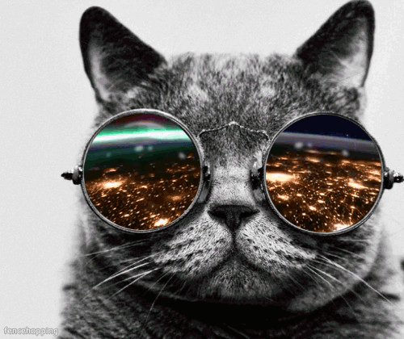

Contacts
- e-mail:vrabely.andrea@gmail.com
- facebook/Andrea Vrabély
- github/Vrandi
About me
Even thought I didn't really had a career before I consider myself as a career changer. For many years I thougt I would be a dance teacher, after that a translator and after that a linguist. Now I think I found the right path.
I speak English and Italian. I have a driver licence too, but I can't drive at all. It's hopeless.
I have a dreamy and outgoing personality so my last given nickname was Alice (Alice in wonderland).
Studies:
-
Currently: Green Fox Academy
Junior softwer developer.
-
Pázmány Péter Chatolic University: Computational linguistics
Introduction to programming and computer science in connection with language technology.
-
University of Pécs
Italian major with English minor.
I may not have gone where I intended to go, but I think I've ended up where I needed to be.
Experience
-
MOL Magyarország Szolgáltató Kft.
- administration
- translation
-
Decathlon
Fitness department
- sales
Other Interests
I like sports in general but for ten years I was a latin american and ballroom dancer at Adria-Szigo Danceschool, so dancing is really close to my heart. Now in my spare time I like to go hiking and swimming.
Thank you for reading my CV!